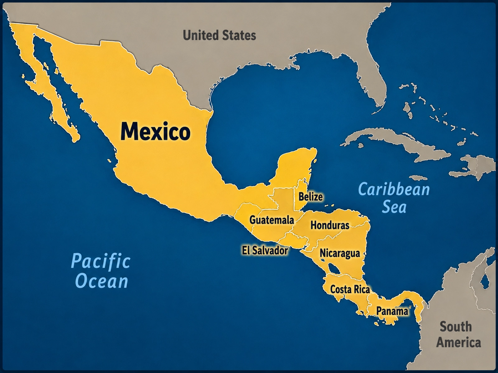
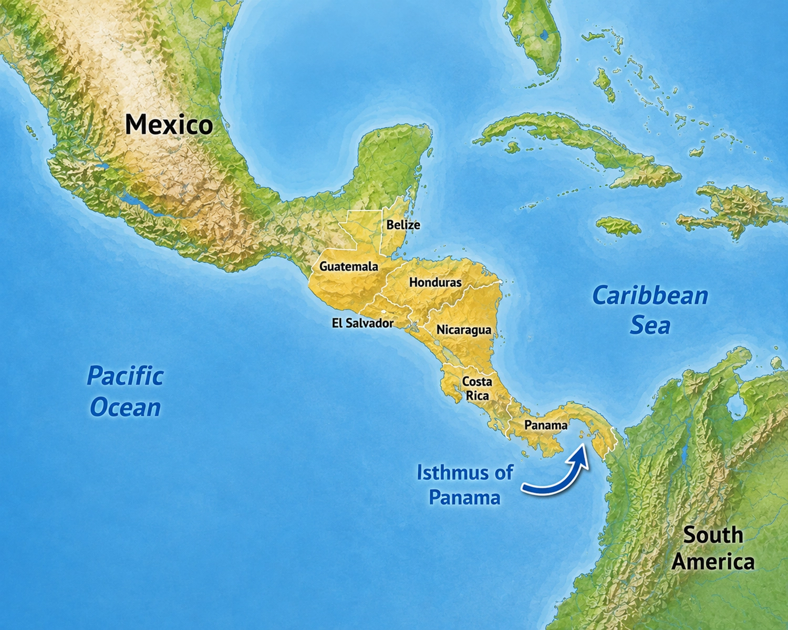
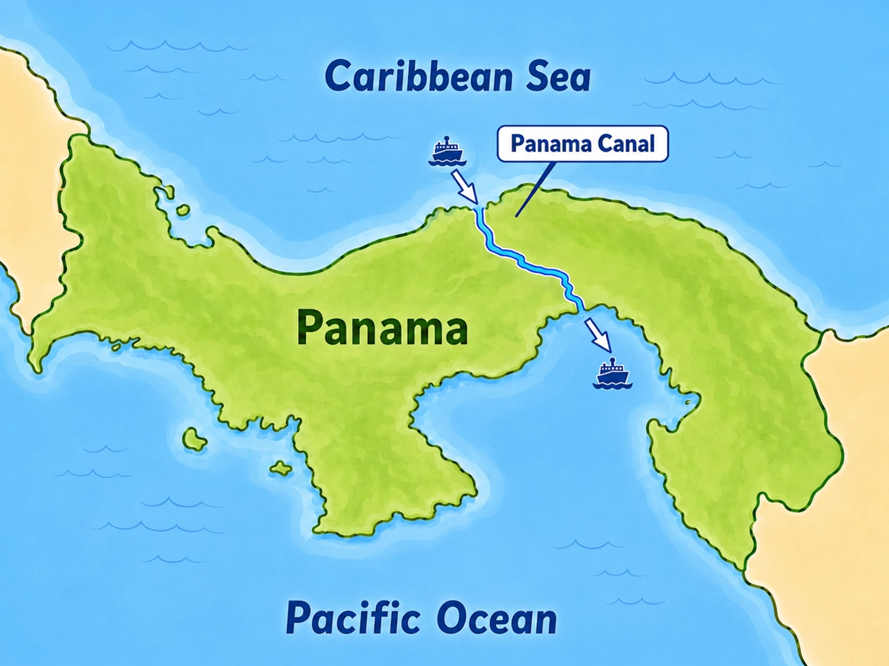

Mesoamerica begins with Mexico in the north and
continues south through the countries of
Central America.
This region forms a long connection between the larger land areas
to the north and south. Mountains, tropical forests, coastlines,
and narrow stretches of land help shape its geography.
🇲🇽 MexicoCentral America

Mesoamerica includes Mexico and the countries of Central America.
Central America
Seven Countries
South of Mexico, Central America contains
seven countries.
1Belize
2Guatemala
3Honduras
4El Salvador
5Nicaragua
6Costa Rica
7Panama
From north to south, these countries form a narrow land bridge between
Mexico and South America.
A Narrow Land Bridge
What Is an Isthmus?
Central America is an example of an
isthmus.
An isthmus is a narrow strip of land that connects two
larger land areas, with water on both sides.
Central America connects the larger land areas of North America
and South America.
🌊
Pacific Ocean
West of Central America
🌊
Caribbean Sea
East of much of Central America

Central America forms a narrow land bridge with water on both sides.
At the Southern End
Panama Connects Two Continents
At the southern end of Central America lies
Panama.
Panama forms the land connection between
Central America and South America.
Its location between two large continents and two major bodies
of water has made Panama an important crossroads for travel
and trade.

The Panama Canal creates a shortcut between the Atlantic and Pacific sides of the Americas.
A Famous Waterway
The Panama Canal
One of the world's most famous human-made waterways crosses Panama:
the Panama Canal.
The canal allows ships to travel across Panama between the
Atlantic and Pacific sides of the Americas.
Without the canal, many ships traveling between the two oceans
would have to sail thousands of extra miles around the southern
end of South America.
Instead of...
Atlantic→Panama Canal→Pacific
Looking Ahead
The Maya
Long before today's national borders existed, the
Maya civilization developed in parts of
Mexico and Central America.
The Maya built large cities and temples, created a writing system,
developed advanced mathematics, and carefully studied the movement
of the Sun, Moon, and stars.
The geography of Mesoamerica will matter again when the Maya are
studied in greater detail.
Mesoamerica is a bridge between larger land areas.
Mexico and the seven countries of Central America connect the
northern and southern parts of the Western Hemisphere, while the
narrow shape of Central America places the Pacific Ocean and
Caribbean Sea surprisingly close together.